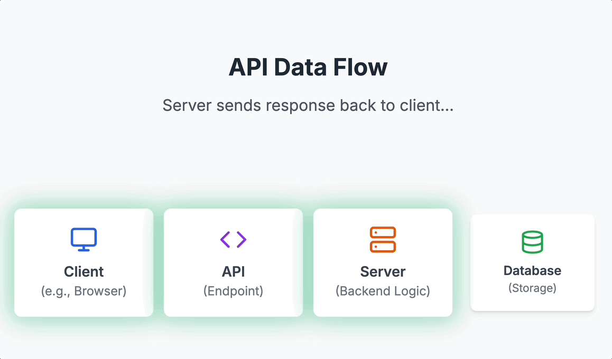
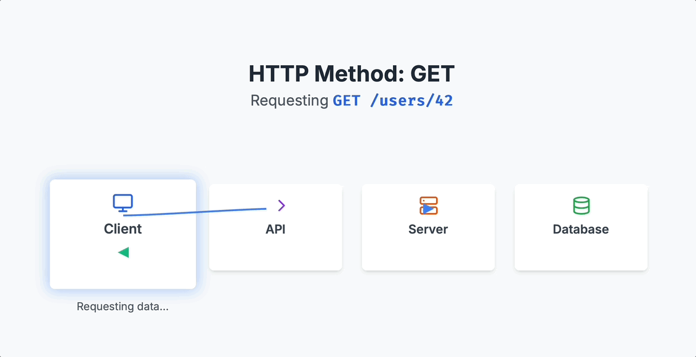
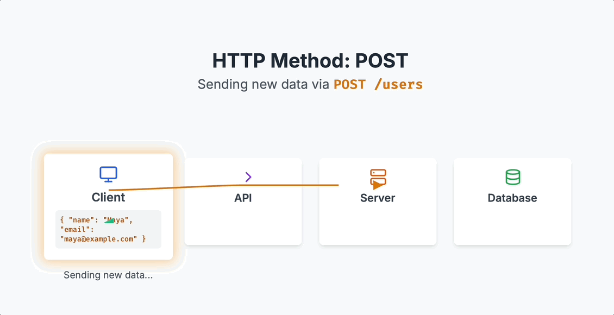

library(httr2) # Makes web requests
library(glue) # Glue StringsSession 2: Weather Data - OpenWeatherAPI
Session 2: API Fundamentals
1. Goals & Objectives
- Explain what an API is and how it supports data extraction Theoretical elements of API
- Make requests to a public API and interpret the JSON response
- Understand and apply HTTP status codes and API keys
- Write clean, readable code to extract and parse API data
(Change the based on concepte Foundation) (Mention Querying data base more as an action)
2. Conceptual Foundation
Part A. Theoretical ideas of APIs
Note 1:
- This is not a webdeveloper nor a CS course but with a decent understanding of the logic, you and your students will appreciate the utilizartion of web scrapiing more
P1.
What is an API? (Again)
It is the abiluty for software to communicate

- Q1: What is its utility of APIs? (multiple choice)
Note 2:
This imagae is overly simipliefed in that a client left makes request through an api to a server/database then tthe server/database provides responses
A client and server can exist on the same computer. This is often what’s happening in local development (e.g., querying a local database from R)
P2.
Lets go deepeer into understanding Define:
Client (request) –> API –> Server –> Database
Client <– API <– Server (response) <– Database

Q2. Matching You might show this flow visually and say:
“The [API] is the waiter.”
“The [client] is the customer.”
“The [server] is the kitchen.”
“The [database] is the fridge or pantry.”
Note 3:
Action: Client makes a request
Action: Server queries Database provides a response
P3.
Lets spend some more time on the request and response
The client sends a request asking for info (like taylor swift or today’s weather). This request includes:
- A URL (e.g., with parameters like ?q=San+Luis+Obispo)
- Possibly an API key
- A method (e.g., GET or POST)
The server then returns a response which contains:
- data (temperature, artist name, forecast, etc.)
- metadata (This is information about the response.)
- status code (Tells you whether the request was successful)
This information is traditionally provided in JSON Format.
** Server Response *************************
P4.
Let’s focus on what the response is 1st (what we receive from the server):
Below is an example GIF of the information senr from the server in JSON format:

Note 4:
- When we send a request to an API, we get a response body, which includes the content — typically JSON — divided into data (what we wanted), metadata (info about the data), and a status_code telling us if the request worked.
P5.
Status codes tell you what happened with your request:
- `100s`: Info
- `200s`: Success (highlight: 200 OK)
- `300s`: Redirect
- `400s`: Client error
- `500s`: Server errorNote 5:
- Emphasize: In most data APIs, your goal is to get a 200 response.
- Use examples like making up a nonexistent city or artist to show how an API might respond with a 400 or 404.
** Client Request *************************
P6.
What type of client requests can we make?
CRUD Framework (Create, Read, Update, Delete)
Though APIs allow all four, Read (GET) is most common in data science.
RESTful API mapping:
- Create → POST
- Read → GET
- Update → PUT/PATCH
- Delete → DELETE
(TODO: Create a GIF for each the above that is really illuminating, so GET and POST GIFs, its created, you have to actual turn it into a gif becuase it is actual a video)


Note 4:
- We’ll focus mostly on GET, and occasionally show POST (e.g., retrieving personalized weather data).
- Briefly mention: Apps like Instagram or Facebook rely on all four CRUD operations—updating posts, deleting comments, etc.
P6. Setup API_Key [[Based on time do One of the three steps]]
[[1. email attendees to go to the weather website and get API key or whatever information needed before the conference. Create a video that’s displaying how to do this]] [[1a. Discuss .Renviron.txt, how we use: to create and edit API key: usethis::edit_r_environ()]] [[1b. Use Sys.getenv("API_KEY") to see API in console]] [[Note that you have to use the 1a to see the api key again]] Restart R
[[2. have attendees get the key during the break session if they have not done so already]]
[[3. use a common key, but tell them it is bad practice]]
[[regardless of the decision made of the three options above have attendees store information in the environment file]]
Note 5: there are many ways of doing this, but I’m going to stick with using tidyverse functions.I’m going to show you two ways to actually implement the query using the one way of one of the ways of doing this within a tiny verse using string glue
P7: Requests, URLs & Queries P7. so what we’re going to first do is create our response and the most ideal way. - A request begins with a URL, which contains both:
- The endpoint (base address of the API)
- The query string (additional key-value pairs that modify the request)
- We often need to glue strings together to build this full URL dynamically.
- A request is not “automatically” turned into JSON when sent — it’s the response that’s usually formatted as JSON. The request is often URL-encoded if it’s a GET.
P8: What Happens Under the Hood
- When we use a URL like
...?q=San+Luis+Obispo&appid=..., we’re constructing a query string, which is appended to the base URL. - Think of this as “asking the question”—the query string shapes the request.
- The server receives the request, processes it, and responds with structured data (typically JSON).
- We’re not sending JSON in this case—we’re sending a URL with parameters. JSON is returned to us as a response format.
P9: Two Ways to Build Request Objects
Method 1: Manual String Gluing
city_name <- "San Luis Obispo"(TODO: place video into gif of URL anantomy)
current_weather_url <- glue("https://api.openweathermap.org/data/2.5/weather?",
"q=", URLencode(city_name),
"&appid=", Sys.getenv("API_KEY"),
"&units=imperial")current_weather_urlNote 6: explicily state what each element is
req <- request(current_weather_url)Built Request Object
reqNote 7:
- This method shows the anatomy of the URL explicitly.
- Great for emphasizing how query parameters are constructed using strings.
- Helps reinforce the idea of “asking a question via the URL.”
Note 8:
- We are going to do it again in a diferent way but we are goint to process the response further here becuae
- I wanted you to undertstadn the anatomy of the URL
- Have multiple ways of doing the same thing
Method 2: Using req_url_query()
Step 1: Build Request Object
req <- request("https://api.openweathermap.org/data/2.5/weather") |>
req_url_query(
q = city_name,
appid = Sys.getenv("API_KEY"),
units = "imperial"
)reqNote 9:
- This method abstracts away the string building.
- It’s cleaner and reduces chances of typos or formatting errors.
- Teaches students to treat query arguments like named inputs.
- You can still inspect the built URL using
req$url.
Step 2: Make request
response <- req_perform(req)responseNot a step: View content Type
content_type <- resp_content_type(response)content_typelibrary(dplyr)Step 3: Process the Response
## IF the status code is 200 we are good
if (resp_status(response) == 200) {
# Parse JSON
result <- resp_body_json(response)
# Print Results as JSON
print(result)
#---------------------------------------
# Convert to Data Frame directly
current_weather_df <- as.data.frame(result)
# Print Results as Data Frame, using dplyr
print(select(current_weather_df, name, coord.lon, coord.lat, weather.main, main.temp))
## ELSE state there is an Error
} else {
cat("Failed. Status code:", resp_status(response), "\n")
}Note 10: There are many other variable that is given but we focus on There is more information that is given but we are interested in the body of the request, hence we use resp_body_json that takes the body and that is what we are after as a json and we then convert it into a data frame
Let’s dissect & build a function 1
(TODO: Remove certain element of functions that are needed to understand the function) (TODO: Break up functions 1 and 2, to be better compartmentalized)
## Step 1: Define function "get_city_coords" that accepts the parameter "city"
get_city_coords <- function(city){
## Step 2: Create API request URL
geo_url <- glue(
"http://api.openweathermap.org/geo/1.0/direct?",
"q=", URLencode(city),
"&limit=1&appid=", Sys.getenv("API_KEY")
)
## Step 3: Use req_perform() and request() to call the API with the URL request
geo_response <- req_perform(request(geo_url))
## Step 4: If the status code is 200 (OK), use resp_body_json() to parse our response and as.data.frame to coerce it to data.frame.
if (resp_status(geo_response) == 200) {
geo_data_df <- resp_body_json(geo_response) |>
as.data.frame()
## Step 5: Assess if the output has 0 length, meaning no result. If so, stop and display an error message.
if (length(geo_data_df) == 0) {
stop("City not found. Please check the city name.")
}
## Step 6: Assign latitude and longitude to variables, and use round() to clip it down to 2 decimal places.
mod_1_geo_data_df <- geo_data_df |>
mutate(lat = round(lat,2),
lon = round(lon,2))
## Step 7: Select Certain Columns (chaptgpt)
mod_2_geo_data_df <- mod_1_geo_data_df |>
select(country,name,lat,lon) |>
rename(city = name)
## Step 8: Return data frame with the country, city name and latitude / longitude.
return(mod_2_geo_data_df)
}
}P. Lets try out this new function on the city
get_city_coords(city_name)P. Lets Look at multtiple cities using the the map_df fucntion within the purrr package
library(purrr)
# List of cities you want to geocode
cities <- c("San Luis Obispo", "Chicago", "New York", "Atlanta", "Houston", "Des Moines")
# Use walk() from purrr to apply the function to each city
map_df(cities, get_city_coords)Let’s dissect & build a function 2
(TODO: Remove certain element of functions that are needed to understand the function) (highltight the function days in this)
library(lubridate) # Time and date handlingP. Emphasize the new endpoint (https://api.openweathermap.org/data/3.0/onecall/day_summary?) an how it is a paid subscription
get_past_weather_by_city <- function(city, days) {
# Step 1: Get city coordinates
coords_df <- get_city_coords(city)
lat <- coords_df$lat
lon <- coords_df$lon
cat("Coordinates for", city, "-> Latitude:", lat, "Longitude:", lon, "\n")
# Step 2: Create vector of past dates
date_range <- as.character(today() - days(1:days))
# Step 3: Define function for single date
fetch_day_summary <- function(date) {
weather_url <- glue(
"https://api.openweathermap.org/data/3.0/onecall/day_summary?",
"lat=", lat,
"&lon=", lon,
"&date=", date,
"&appid=", Sys.getenv("API_KEY"),
"&units=imperial"
)
response <- req_perform(request(weather_url))
if (resp_status(response) == 200) {
resp_body_json(response) |>
as.data.frame() |>
mutate(city = city, date = date)
} else {
warning(paste("Failed to get weather for", date, "-", resp_status(response)))
return(NULL)
}
}
# Step 4: Map over date_range and bind into a single data frame
map_dfr(date_range, fetch_day_summary)
}get_past_weather_by_city(city_name, 5)P. There are alot of ways of doing this, I decided not to use for loop in R
num_days <- 5
# Get historical weather data for each city using map_dfr
all_weather_df <- map_dfr(
cities,
~ get_past_weather_by_city(.x, num_days)
)Note: Emphasize error handling
Homework Function 1:get_city_current_weather()
Purpose: Retrieves current weather conditions for a single city. Demonstrates basic GET usage and parsing a flat JSON structure.
get_city_current_weather <- function(city) {
url <- glue::glue(
"https://api.openweathermap.org/data/2.5/weather?",
"q=", URLencode(city),
"&appid=", Sys.getenv("API_KEY"),
"&units=imperial"
)
response <- request(url) |> req_perform()
if (resp_status(response) == 200) {
response |>
resp_body_json() |>
purrr::pluck("main") |>
tibble::as_tibble() |>
dplyr::select(temp, humidity) |>
dplyr::mutate(
city = city,
description = resp_body_json(response) |> purrr::pluck("weather", 1, "description")
) |>
dplyr::select(city, temp, humidity, description)
} else {
warning("Failed to retrieve current weather for ", city)
return(NULL)
}
}P. Run for a Single City (e.g., “Atlanta”)
get_city_current_weather("Atlanta")P. Run for a Vector of Cities Using purrr::map_dfr()
cities <- c("San Luis Obispo", "Chicago", "New York", "Atlanta", "Houston", "Des Moines")
weather_df <- purrr::map_dfr(cities, get_city_current_weather)Homeowrk Function 2: get_city_forecast_5day()
Purpose: Retrieves the next 5 days of forecast data (in 3-hour intervals). This introduces nested lists and flattening structures.
Note: we are now getting times as well
get_city_forecast_5day <- function(city) {
url <- glue::glue(
"https://api.openweathermap.org/data/2.5/forecast?",
"q=", URLencode(city),
"&appid=", Sys.getenv("API_KEY"),
"&units=imperial"
)
response <- httr2::req_perform(httr2::request(url))
if (httr2::resp_status(response) == 200) {
response |>
resp_body_json() |>
purrr::pluck("list") |>
purrr::map_dfr(
~ tibble::tibble(
city = city,
timestamp = .x$dt_txt,
temp = .x$main$temp,
weather = .x$weather |> purrr::pluck(1, "description")
)
)
} else {
warning("Failed to retrieve forecast for ", city)
return(NULL)
}
}P. Try for city notice the number of rows and columns
get_city_forecast_5day("Atlanta")P. Lets Look at multiple cities
cities <- c("San Luis Obispo", "Chicago", "New York", "Atlanta", "Houston", "Des Moines")
forecast_df <- purrr::map_dfr(cities, get_city_forecast_5day)Homeowrk Function 3: get_air_pollution_by_coords(lat, lon)
Purpose: Uses lat and lon to query current air quality. Demonstrates chaining of API requests (e.g., using get_city_coords() first), and different JSON structures.
get_air_pollution_by_coords <- function(lat, lon) {
url <- glue::glue(
"http://api.openweathermap.org/data/2.5/air_pollution?",
"lat=", lat,
"&lon=", lon,
"&appid=", Sys.getenv("API_KEY")
)
response <- request(url) |> req_perform()
if (resp_status(response) == 200) {
response |>
resp_body_json() |>
purrr::pluck("list", 1) |>
{\(x) tibble::tibble(
aqi = x$main$aqi,
co = x$components$co,
pm2_5 = x$components$pm2_5,
pm10 = x$components$pm10
)}()
} else {
warning("Failed to retrieve air pollution data for lat = ", lat, ", lon = ", lon)
return(NULL)
}
}P. Step-by-Step for Usage with a Data Frame, use get_city_coords to get the cities of lon and lat.
cities <- c("San Luis Obispo", "Chicago", "New York", "Atlanta", "Houston", "Des Moines")
city_coords_df <- map_dfr(cities, get_city_coords)P. Get Air Pollution Data for All Cities
library(tidyr)pollution_df <- city_coords_df |>
mutate(
pollution = map2(lat, lon, get_air_pollution_by_coords)
) |>
unnest(pollution)